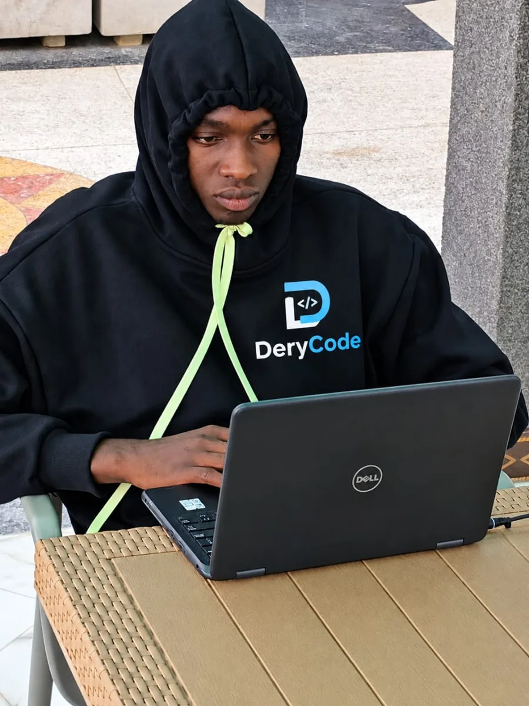
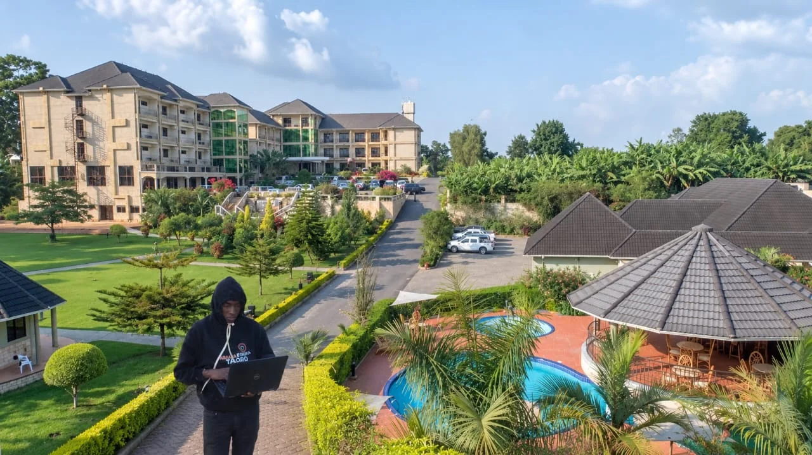
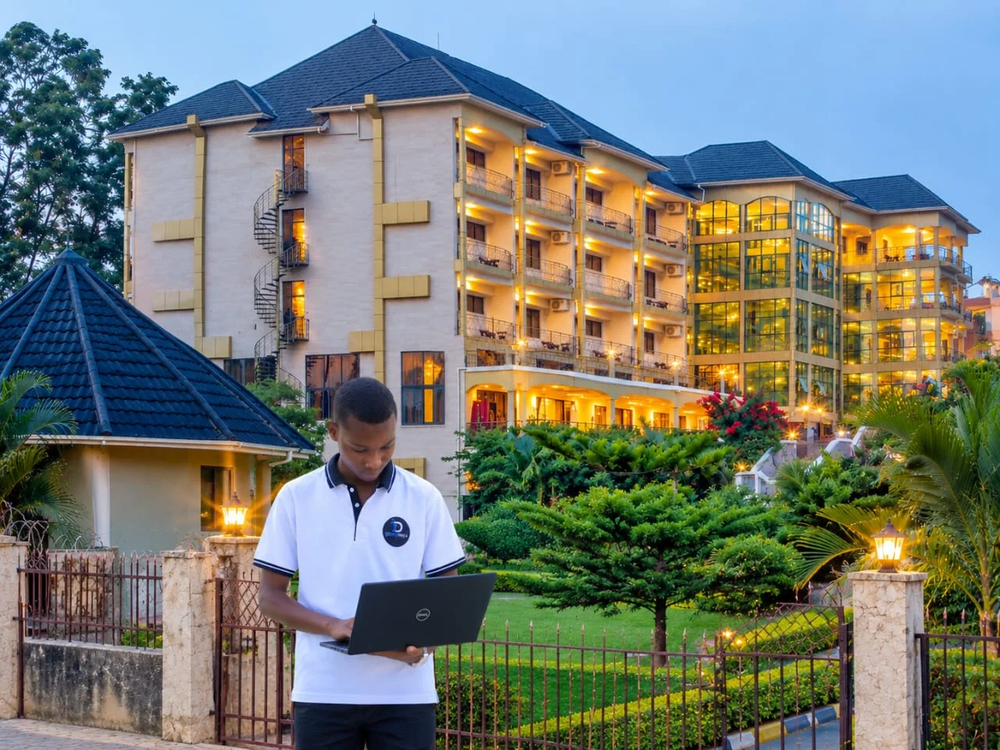

10 / LIFE
The human
side of the work.
Photos, travel, interests, habits and the books that shaped the thinking.
GALLERY
Photos





Add video and more photos. Add site visits, client launches, events and short clips. Photos of real work outperform posed portraits for trust, and they are the easiest content to keep current.
TRAVEL & EXPERIENCES
Where the work has taken me
Most travel is work travel: client sites, deliveries and meetings across western Uganda, from Kyenjojo and Fort Portal to Kampala. The places that shaped him most are the ones he did not have to travel to: the trading centres, the farms and the land deals that became the case studies.
Add your travels. Places you have been, and one line on what each one changed about how you think. This is optional but humanising.
PERSONAL INTERESTS & LIFESTYLE
Outside the work
Building things that run
Side projects are the hobby: calculators, search tools, editors. The line between work and play is thin.
Technology and AI
Reading about and testing new models, tools and interfaces, mostly to answer one question: does this help someone here?
Property and land
Not abstract: how land is priced, verified and developed in western Uganda.
Football and community
Local football, and the informal networks where business actually gets done.
Correct these interests. These are drawn from your work. Replace or add what is actually true for you: music, faith, sport, cooking, photography, whatever it is.
PERSONAL DEVELOPMENT & PRODUCTIVITY
How I work
Time: school hours are fixed, so the business hours are early mornings, evenings and weekends. That constraint forces prioritisation: one or two things per day, finished.
Tools: a laptop, a phone, Git, Vercel, Supabase, and a notes system that survives interruption.
Rules: ship something visible each week, write down decisions, and never let a client wait without an update.
BOOKS & LEARNING RESOURCES
What shaped the thinking
Add your real reading list. List the books, courses and people that actually shaped how you build. Five honest entries beat fifty recommendations, and readers trust specificity.
The learning is mostly practical: documentation, source code, and the businesses themselves. Formal reading clusters around company building, capital and product design.